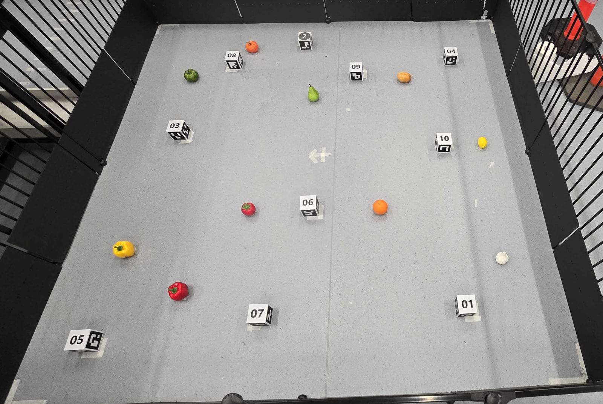

Back to Projects
Fruit Navigation and Mapping Robot
Problem
Enable a mobile robot to autonomously explore an unknown environment and locate specific fruit targets without external positioning or prior maps.

My Work
Perception
- Trained a custom YOLO-based object detector for fruit detection
- Generated a synthetic training dataset with randomized backgrounds and distractors
- Ran real-time detection during robot motion
Localization & Mapping
- Implemented an Extended Kalman Filter (EKF) for sensor fusion
- Performed automated parameter sweeps to tune filter performance
- Built a full SLAM pipeline for operation in unmapped environments
Navigation & Control
- Implemented a ray-casting-based obstacle avoidance algorithm
- Planned motion using the continuously updated map
- Coordinated perception, localization, and navigation through a unified state machine
System Behavior & Validation
- All subsystems ran concurrently in a single runtime
- Robot operated fully autonomously from startup to target approach
- Localization and mapping updated online during motion
- Tested through repeated autonomous runs in a physical robotics arena
- Received 97% on final robot demonstration